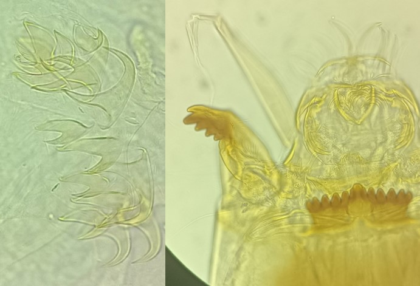
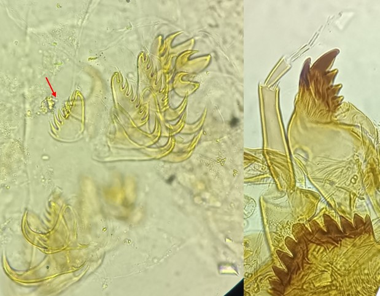

Tribu des Tanytarsini
Plaques ventromentales rapprochées, dent centrale simple ou trifide, 5 paires de dents latérales de même taille, prémandibules avec 3 dents ou plus.


Attention à la confusion avec Micropsectra, qui a des prémandibules bifides. Si celles-ci ne sont pas bien visibles, les griffes des parapodes postérieurs peuvent être utilisée: elles sont environ une centaine chez Micropsectra, tandis qu'elles sont jusqu'à 30 chez Tanytarsus .